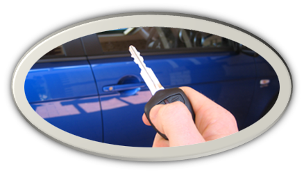

Dealer

Service Center

This is a blockchain (Ethereum) based Asset Management application. In order demonstrate the concept it’s been packaged as a fictional vehicle log book app. The vehicle being the asset and the log book being the digital record of ownership and maintenance.
This demo works with Metamask. You can download the Metamask plugin on https://metamask.io/. It serves as identification and as a wallet.
After downloading and logging in, you need to select the Ropsten Test Network.
Ropsten is a test network. You can get free Ether to use on this network by going to a faucet such as https://faucet.ropsten.be/.
To trial this application, you’ll need to create 3 test accounts on Metamask.
(when processing transactions with Metamast you can set the gas fee to “fast” for quick processing)